Honeywell · HMI · Industrial IoT · AI
VertexONE — Gas Detection in Semiconductor FABs
Honeywell's next-generation toxic gas monitoring system for semiconductor fabs — an evolution of the award-winning Vertex Edge platform, integrating hardware, embedded interfaces, and cloud-ready HMI software.
The Challenge
As UX Lead for the Vertex One program, I led end-to-end design of the Human-Machine Interface for a critical industrial control system used in high-tech environments like semiconductor fabs, where a gas leak is an invisible, fatal threat demanding split-second decisions and near-zero false positives. Legacy interfaces overwhelmed field service engineers with raw sensor data and archaic workflows.
The Process
I led cross-functional workshops at Honeywell's Uncertain facility, translated dense engineering artifacts into shareable frameworks, mapped legacy screens, benchmarked competitors, and synthesized hundreds of customer-support tickets into themes — then wireframed, prototyped, and usability-tested with customers and internal stakeholders on real hardware.
The Outcome
A modern touch HMI recognized for its quality: mission-assurance features like Pump Inhibit Mode and auto-logout screens prevent unintended faults, enhanced diagnostics and remote management reduce labor-intensive service tasks, and a specialized design system for the Vertex touchscreen establishes consistency for future enterprise upgrades.
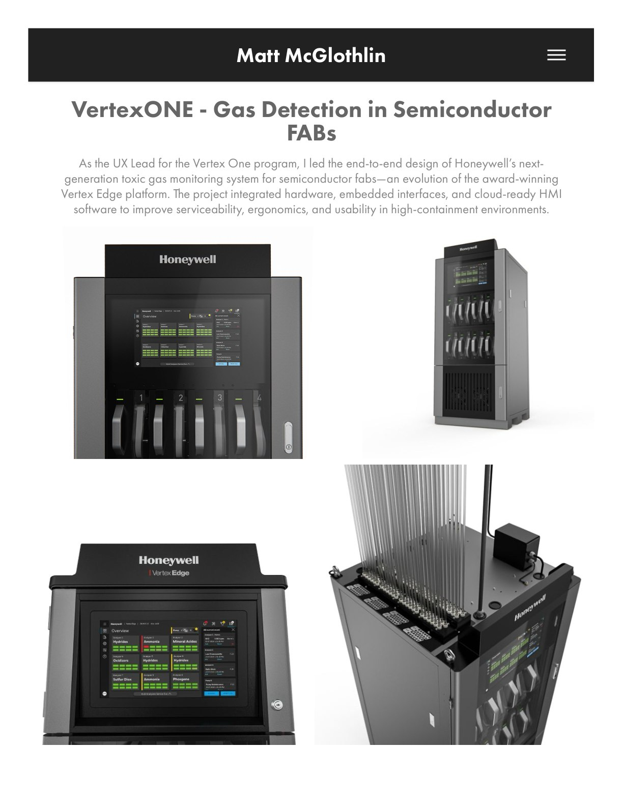
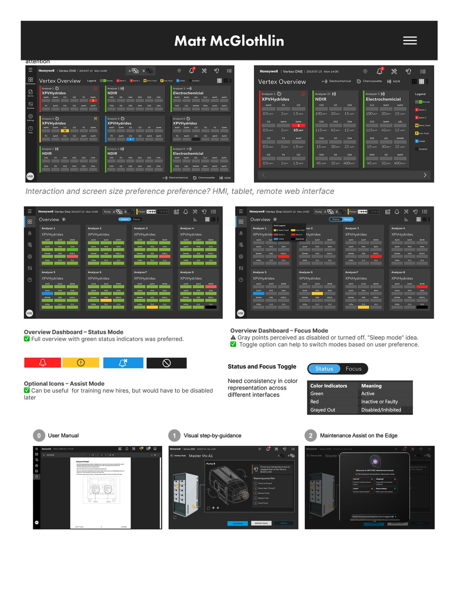
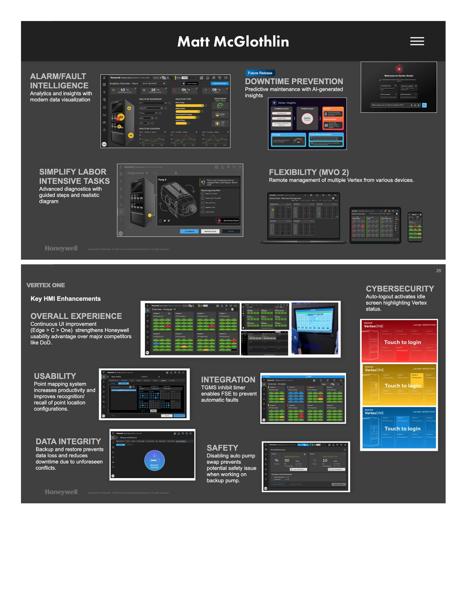
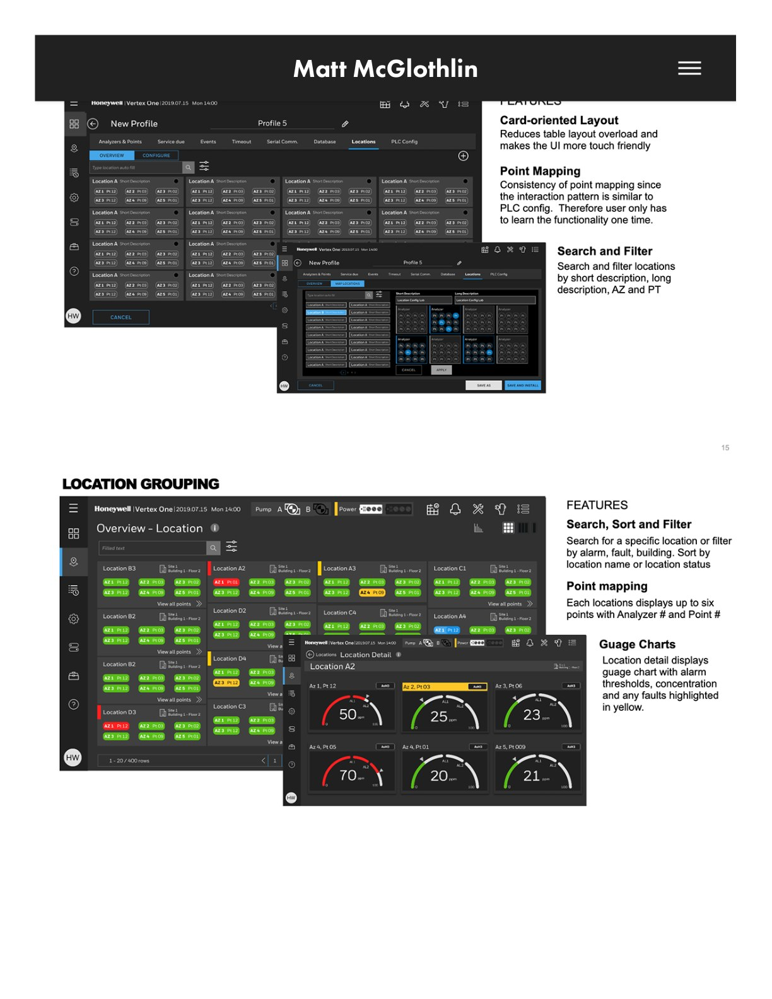
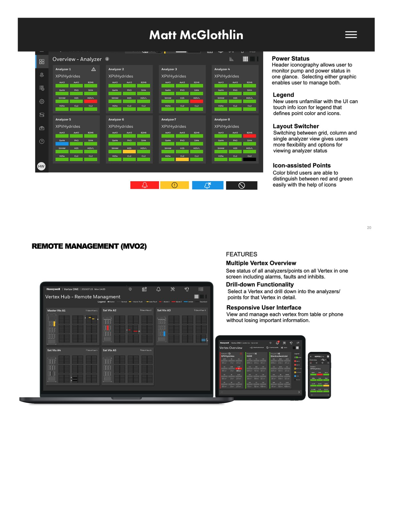
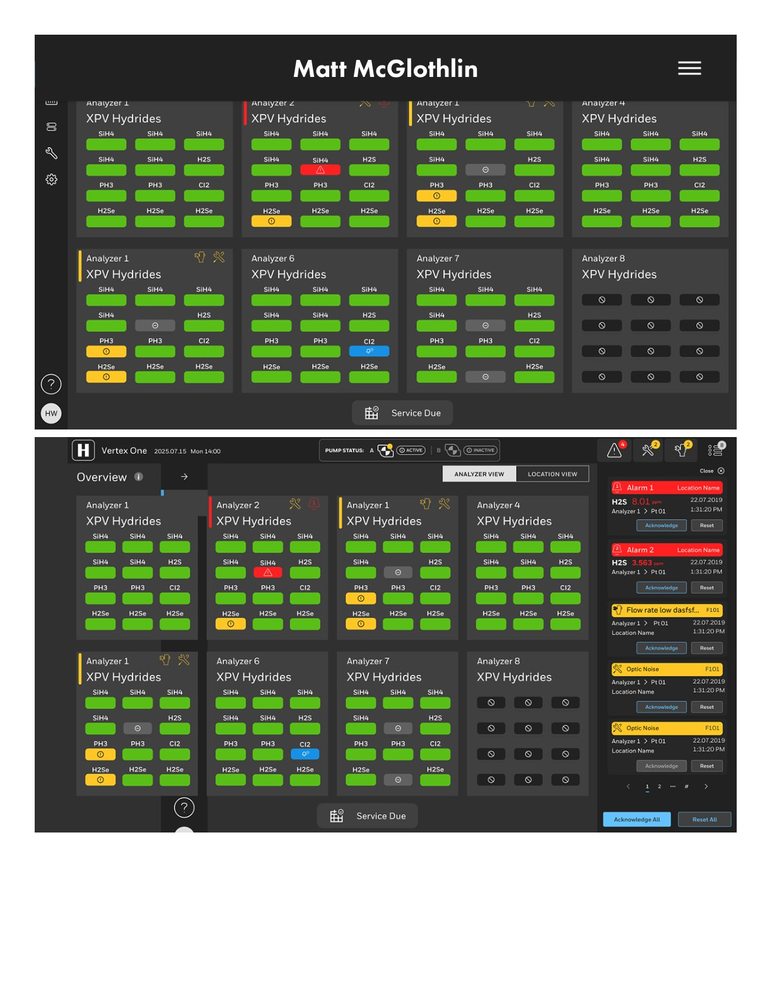
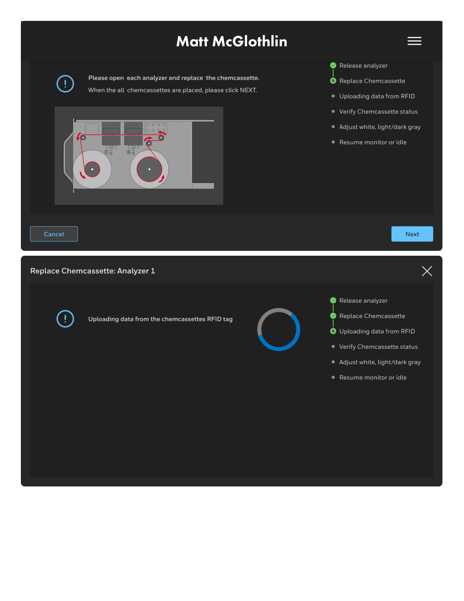
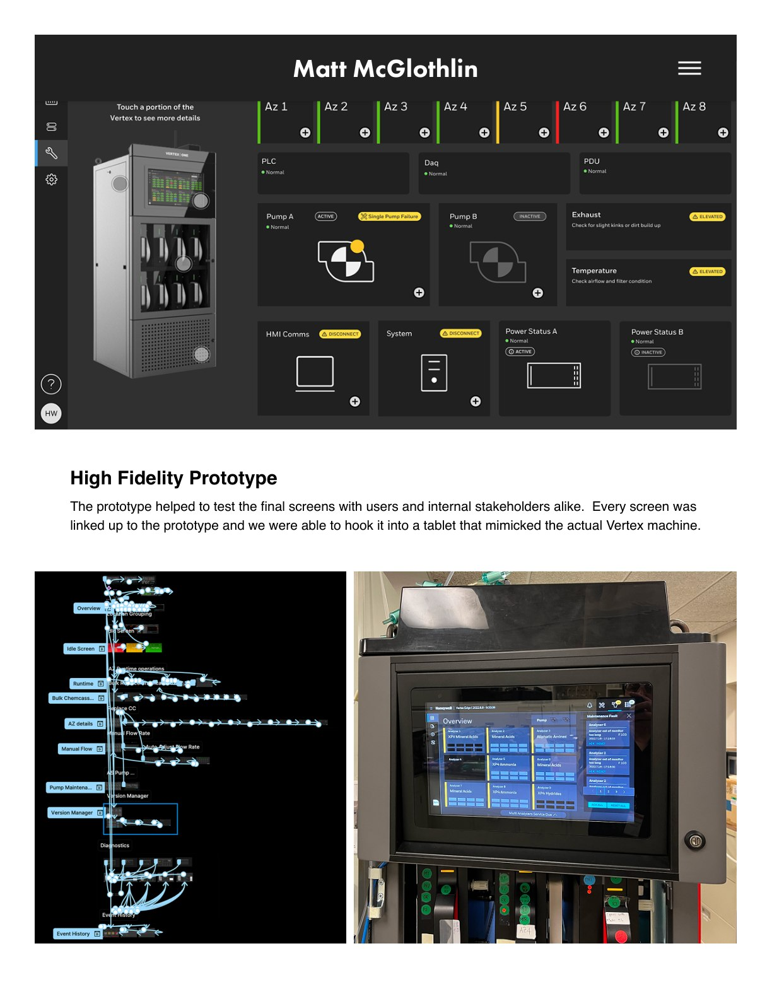
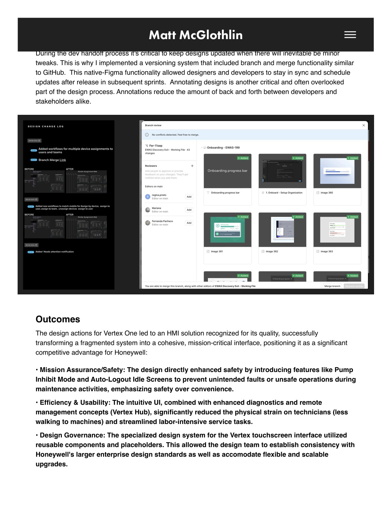
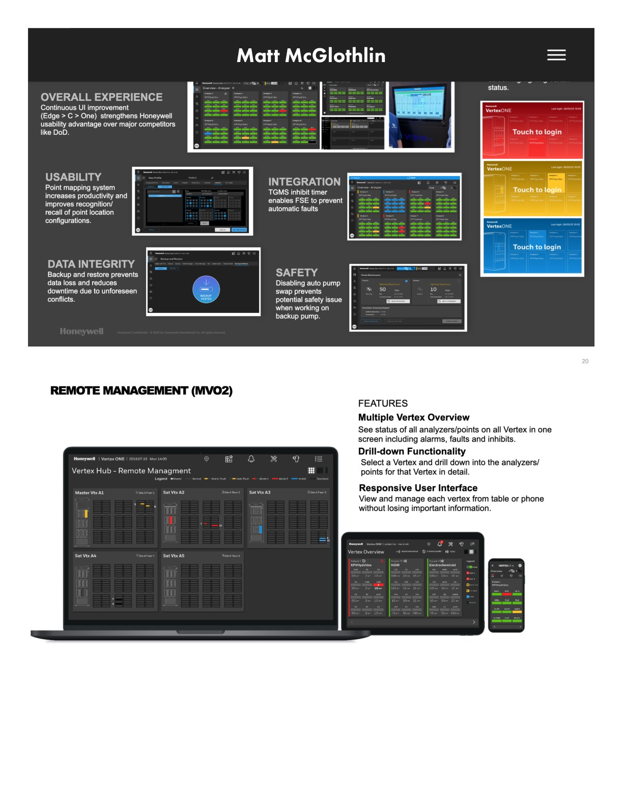
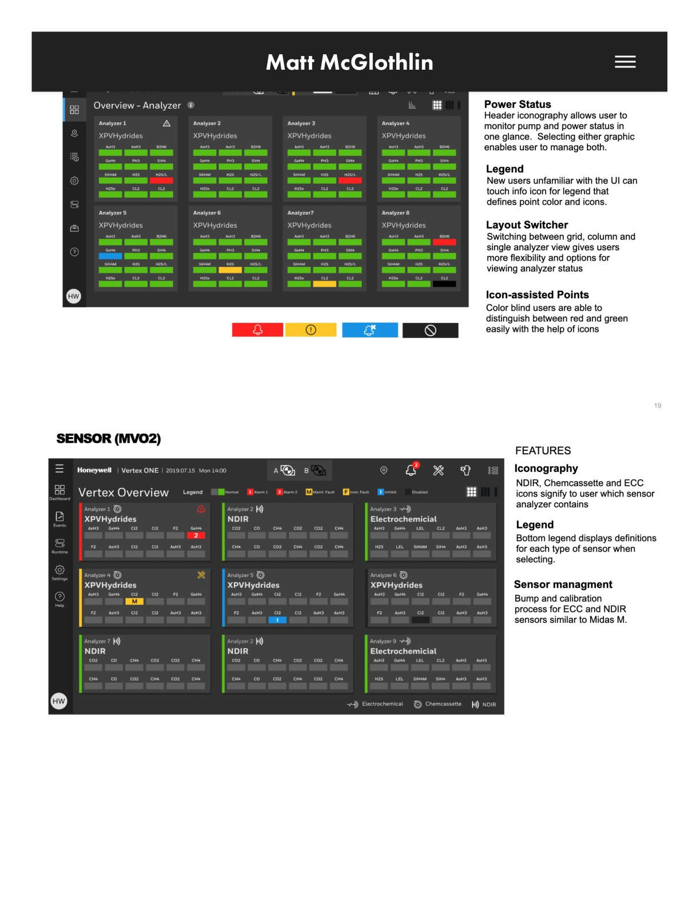
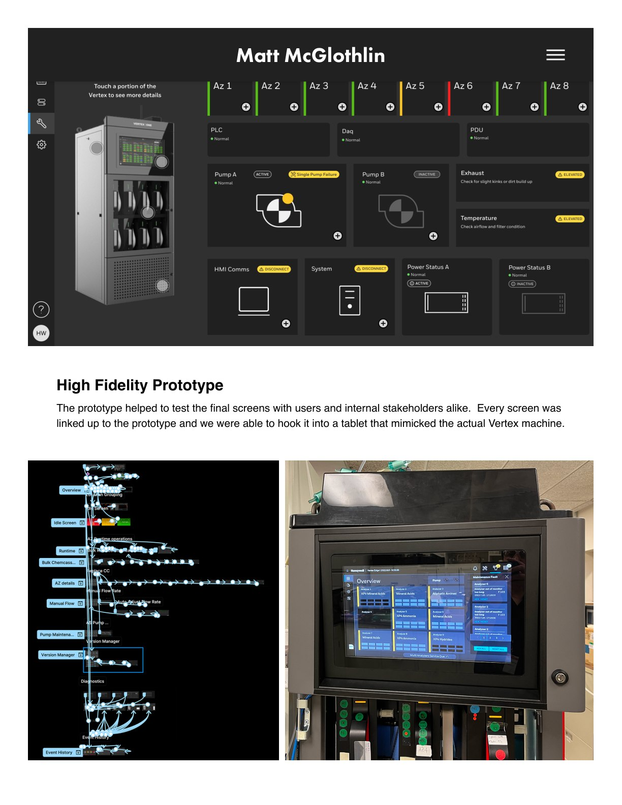